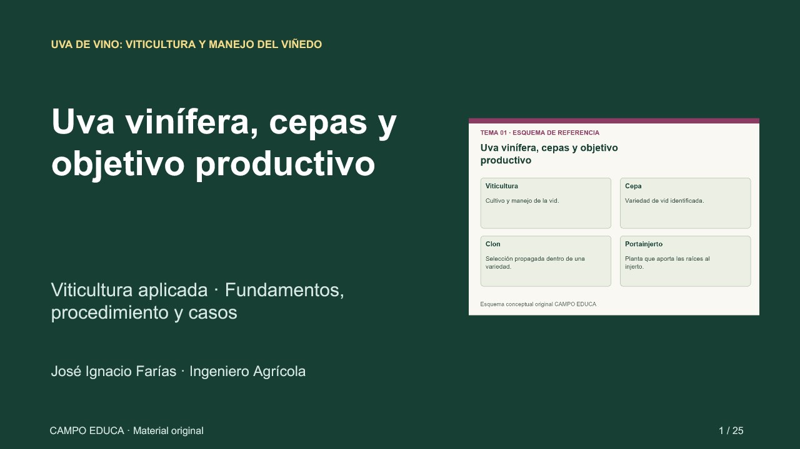

← Volver a CAMPO EDUCATexto y dibujo en la misma diapositiva.
Esta muestra utiliza ocho diapositivas públicas de viticultura. El dibujo se integra en una sola lámina horizontal con todo el contenido original. Pulsa «Pantalla completa» para proyectarlos juntos, sin desplazarte por la página.

No se pudo cargar la imagen.
El mismo visor integrado se aplica a las diapositivas de los 12 cursos. La descarga PNG incluye el contenido y el dibujo en una imagen de 1920 × 1080. Los archivos PowerPoint originales mantienen su diseño anterior.